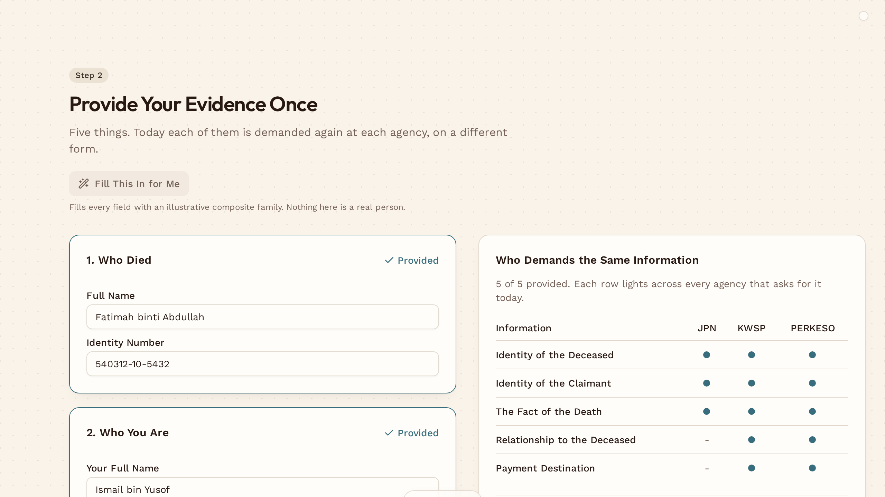
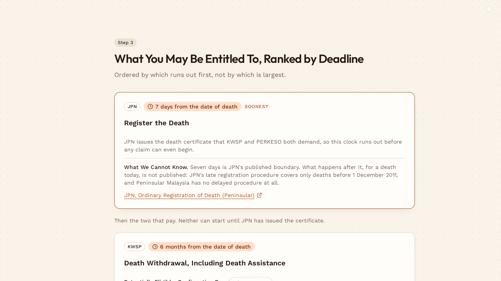
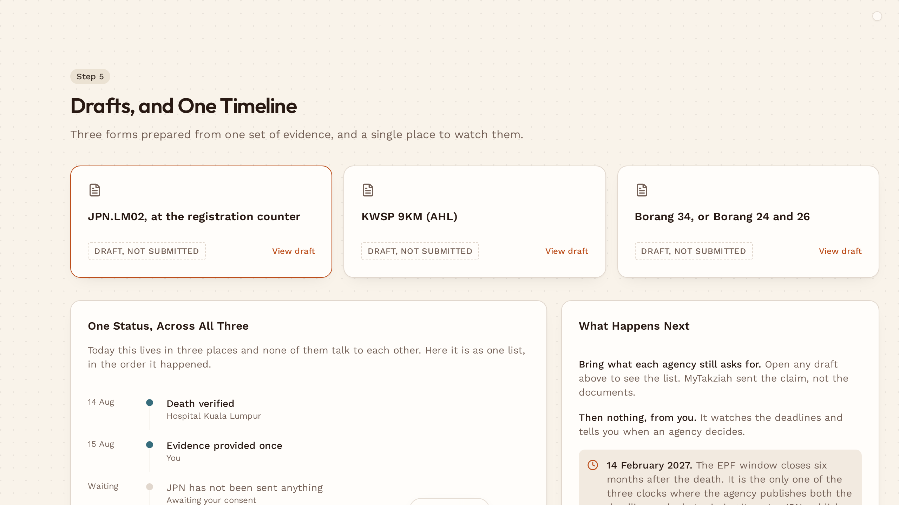

Grief is hard enough.The paperwork shouldn't be.
One part of government already knows. It never tells the other two, so a grieving family tells them again. And again.

The same five facts, demanded thirteen times.
| Demanded of the family | JPN | KWSP | PERKESO | Times |
|---|---|---|---|---|
| Who died | 3 | |||
| Who you are | 3 | |||
| Proof of the death | 3 | |||
| How you are related | - | 2 | ||
| Where to pay | - | 2 | ||
| Times the same family is asked | 13 | |||
At least two in person, with originals, in the weeks after the funeral. Miss six months and the RM2,500 is gone.

Who carries it
So two in three do not. Median age at death in Malaysia is 69.0 years.
They are not offline. It is the process that shuts them out, not the device.

A chatbot tells you what to do. MyTakziah does it.
One telling, three claims. Your evidence reaches JPN, KWSP and PERKESO at once.
Nothing expires while you grieve. Soonest deadline first, seven days before six months.
You can check every word of it. Each condition links the government rule it came from.
Malaysia already has the identity, the data sharing and the law. What it does not have is a journey.

Every death starts the same paperwork.
None of this is new money. The gap is whether a grieving family knows to claim it.


